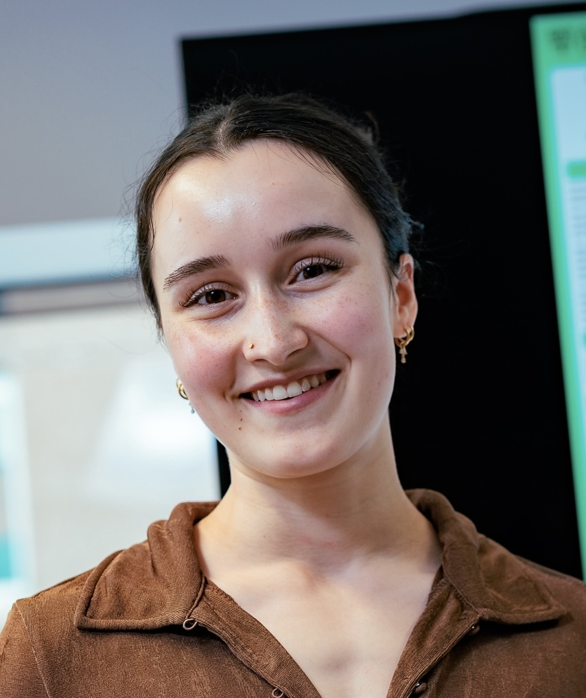
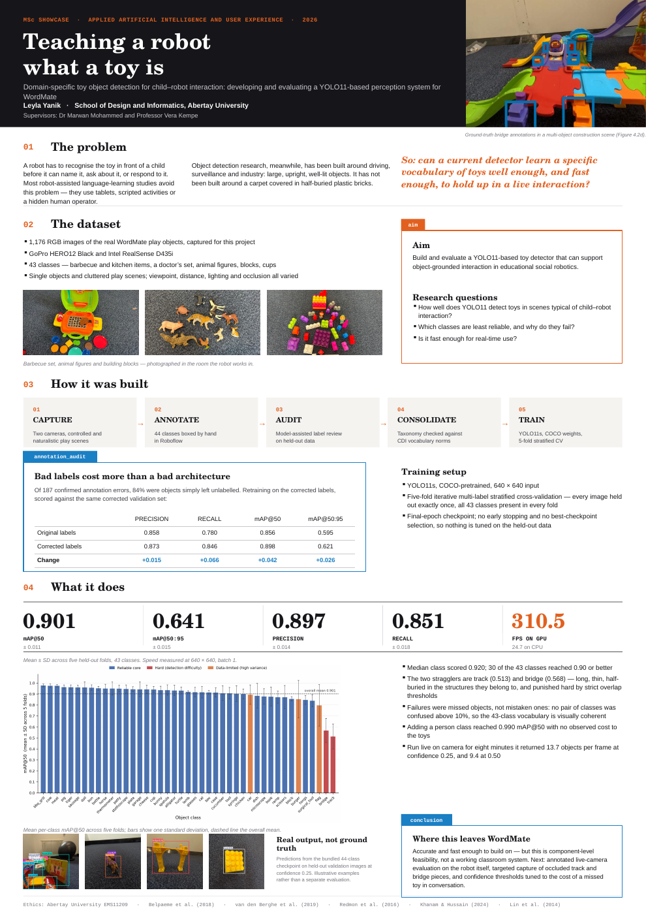
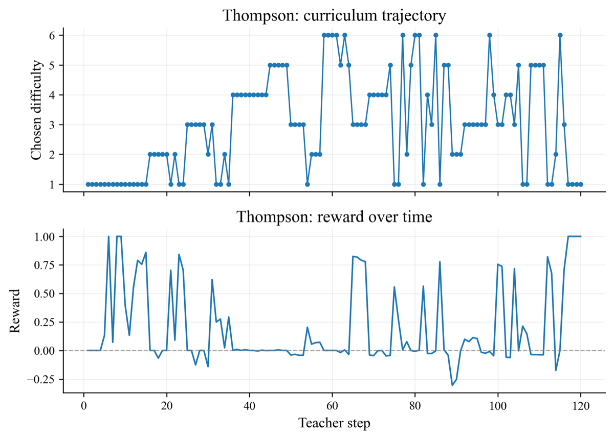
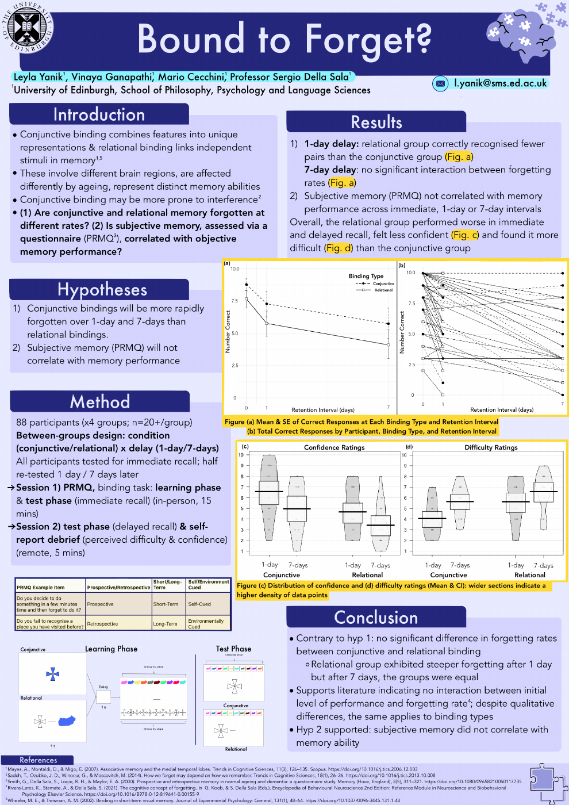
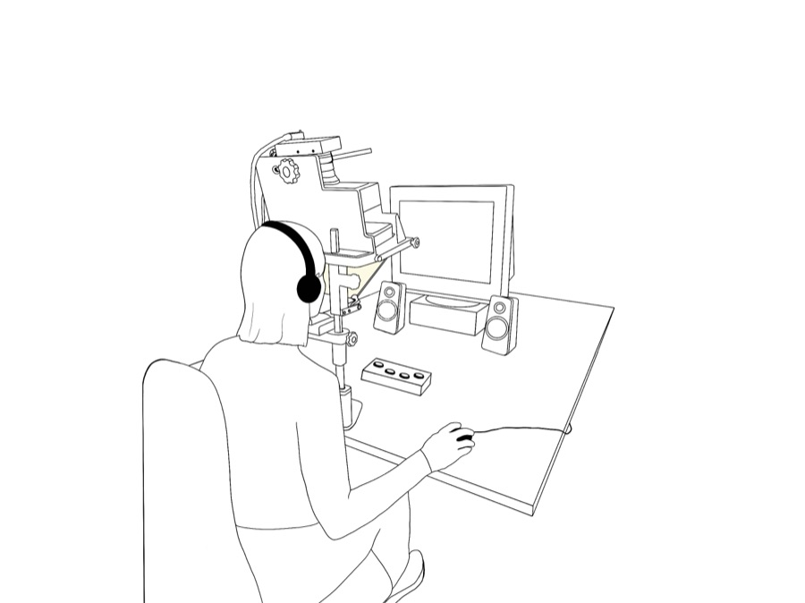

Perceiving the world
Learning-based computer vision and object detection for robotic perception.
AUTONOMOUS ROBOTICS · HUMAN-CENTRED AI
Exploring how autonomous systems can understand the world while respecting the people in it.
PhD Researcher · University of Glasgow
RAINZ CDT · First-year training at the University of Manchester

01 / ABOUT
I'm a PhD researcher in Autonomous Robotics with the EPSRC Centre for Doctoral Training in Robotics and AI for Net Zero (RAINZ CDT), based at the University of Glasgow, with first-year training at the University of Manchester.
My background brings together psychology, artificial intelligence and user experience. Behavioural experiments, eye-tracking and EEG have shaped my interest in perception; computer vision and child–robot interaction have brought that interest into intelligent systems.
02 / RESEARCH DIRECTION
My research interests span embodied AI, computer vision, autonomous systems, perception and human–robot interaction.
Learning-based computer vision and object detection for robotic perception.
Human–robot interaction informed by psychology and human-centred research.
Inspection of net-zero infrastructure that respects workers and surrounding communities.
Research objective Investigate how inspection robots can monitor net-zero infrastructure without compromising the privacy of people around them.
03 / SELECTED WORK
A progression from studying human cognition to developing robotic perception.
DOCTORAL RESEARCH · SEPTEMBER 2026–PRESENT
Privacy-Preserving Robotic Inspection of Net-Zero Infrastructure
Investigating how autonomous inspection robots can monitor net-zero infrastructure while protecting workers’ and communities’ privacy. The project brings together robotics, computer vision and responsible AI.

MSC RESEARCH PROJECT · 2026
Toy recognition for child–robot interaction
Developed and evaluated a YOLO11-based perception system for WordMate, an AI-supported child language-learning project. I assembled and annotated 1,176 toy images, audited labels, and evaluated a 43-class detector using five-fold cross-validation.
Research takeaway: Better training labels improved recall—dataset quality mattered alongside the choice of detector.
Methods, findings & limitations ↗
MSC MODULE · CMP511 ARTIFICIAL INTELLIGENCE AND MACHINE LEARNING · JANUARY–MAY 2026
Can a teacher algorithm choose what a model should learn next?
Built a teacher–student setup where bandit algorithms (UCB, discounted UCB, Thompson sampling) pick which arithmetic tasks GPT-2 and DistilGPT-2 train on, across 24 tasks of varying difficulty. Compared them against uniform and easy-to-hard baselines over three seeds.
The teacher learned a structured curriculum but did not beat uniform sampling, which was the most stable. A fixed easy-to-hard order performed worst, and harder problems stayed near zero accuracy for every method.
Research takeaway: A useful negative result: when the reward signal is only weakly tied to the real goal, a smarter curriculum changes how a model trains, not what it can do.

BSC DISSERTATION · 2025
Compared memory for integrated shape–colour combinations with associations between separate features. The study analysed 82 participants across immediate, one-day and seven-day recall conditions.
No significant difference in forgetting rates was found between binding types by seven days. Self-reported memory did not correlate with objective performance.
Research takeaway: Initial recall and subsequent forgetting need to be examined separately; a stronger immediate score does not necessarily mean slower forgetting.
Read project summary ↗A third-year group project comparing hand preference and performance in 60 adults using LEGO-style construction tasks. Both left- and right-handed participants favoured their dominant hand; the study did not support a general right-hand preference for precision grasping.
Read project summary ↗04 / TOOLKIT
Python · PyTorch · R · SQL
SPSS · Git/GitHub · Markdown
Machine learning · Computer vision
YOLO object detection
Behavioural data analysis · EyeLink
EEG · UX research · Gorilla · Praat
English (C2) · German (C2)
Turkish (B1)
05 / THE JOURNEY
University of Glasgow · EPSRC RAINZ CDT
First-year training at the University of Manchester
Abertay University · Distinction
Data Lab Academy Scholar
University of Edinburgh · First-Class Honours
06 / PROFESSIONAL DEVELOPMENT
2026 · Professional development alongside my MSc.
View certificate (PDF) ↗Two-day event · May 2026
8 CPD hours/points certified by The CPD Certification Service; provided by The Data Lab.

2025 · My line drawing of an eye-tracking setup, shared on Figshare under CC BY 4.0 for others to reuse in methods figures and posters.
View on Figshare (DOI) ↗07 / CONNECT
Autonomous robotics, computer vision,
human–robot interaction and responsible AI.